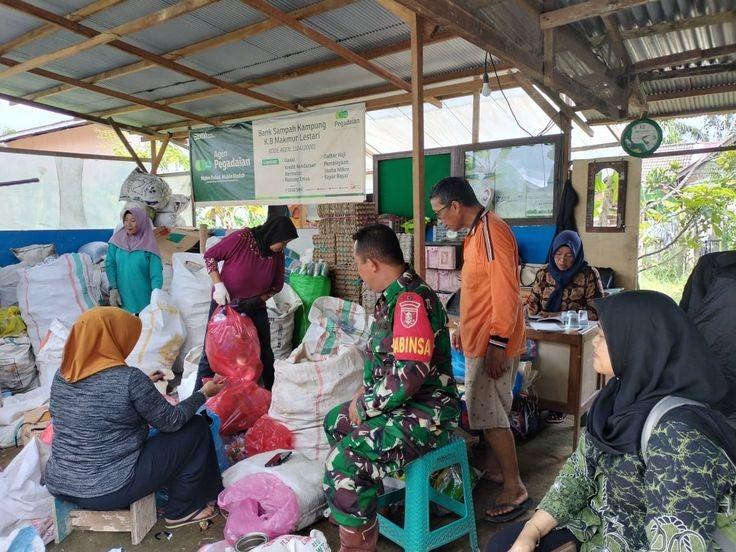

Bank Sampah adalah solusi inovatif untuk mengelola sampah rumah tangga secara bertanggung jawab. Dengan sistem penukaran sampah menjadi poin atau tabungan, masyarakat terdorong untuk memilah dan mengumpulkan sampah secara mandiri.
Program ini tidak hanya membantu mengurangi volume sampah yang berakhir di TPA, tapi juga memberikan nilai ekonomi bagi warga. Sampah plastik, kertas, dan logam yang biasanya dibuang begitu saja kini bisa menjadi sumber manfaat.
Selain itu, Bank Sampah juga menjadi sarana edukasi lingkungan, memperkuat kesadaran kolektif bahwa sampah bukan musuh, melainkan peluang. Dengan partisipasi aktif, kita bisa menciptakan lingkungan yang bersih, sehat, dan berkelanjutan 🌍
Bank Sampah adalah sistem pengelolaan sampah berbasis ekonomi yang mendorong masyarakat untuk memilah, mengumpulkan, dan mengolah sampah secara bertanggung jawab. Sampah yang biasanya menjadi masalah lingkungan diubah menjadi sumber pendapatan.
Bank Sampah bisa didirikan oleh komunitas lokal, sekolah, perusahaan, pemerintah daerah, NGO, bahkan individu yang peduli lingkungan.